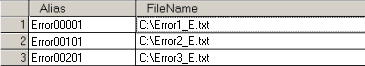
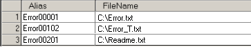

|
|
|
|
|
|
|
|
This section explains how to switch between text files that have different instructions to the user.

Create several files in text format (*.txt) using any text editor.
Select Unicode as the character encoding when you save the file.

In the Navigator window's Project tab, double-click Environment under the Target node, double-click Data Files, and then select the Text node to open the Text File Editor.
Define a text file in the File Name field. When the location of a text file is specified, the Alias field fills in the name of the file without the extension. You can change the alias to a different name.


You can set up a maximum of 200 files.
Click Add. Repeat steps 1 to 3 to add all the text files, and use the same alias for all files.

To each alias, append three digits to identify the text file number and two digits for the language number. The file ID must be between 000 and 999.

Example:
Specify the ID 000 to 002 for the following three text files. The language number is 01, English.
Alias: Error
File ID: 000 Language ID: 01 = Error1_E.txt
File ID: 001 Language ID: 01 = Error2_E.txt
File ID: 002 Language ID: 01 = Error3_E.txt
The entries in the text file editor will look like this:

You can change languages by assigning the defined Language ID.
See Section 11.7.2.3, Switching Text Files by Language.
Example:
Specify the ID 000 to 002 for the following three text files:
Alias: Error
File ID: 000 (using Language 1) = Error.txt
File ID: 001 (using Language 2) = Error_T.txt
File ID: 002 (using Language 1) = Readme.txt
The entries in the text file editor will look like this:

Select the location the text files are stored.

|
Main Drive |
You can store the text file in internal memory (flash memory). |
|
Secondary Drive |
You can store the text file on the Secondary Drive. |
|
Optional Drive |
You can store the text file on the Optional Drive. |
Click the Toolchest icon  in the menu bar to open the Toolchest window, and select the Text Display folder.
in the menu bar to open the Toolchest window, and select the Text Display folder.
Select the Text Display, and drag and drop it onto the panel.
In the Property Inspector, edit the following Text Display properties.
In Alias Name, enter the text file alias, without the three-digit file number and the two-digit language number.
Set File Number to True, and set up an integer variable that stores the File Number.
At runtime, when you change the value in the File Number Variable, the file displayed in the Text Display changes.

You can combine the File Number, Block Number, and Line Number together in the same Text Display.
The default font is Vijeo Sans Serif. You can select a different font as needed.
Change other properties as necessary. For more information on each field, see Section 11.7.2.1, Setting Up a Text Display.